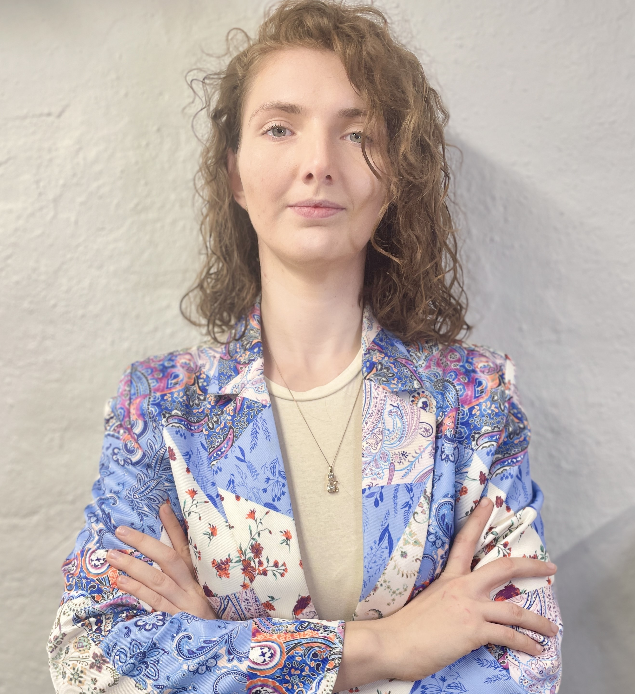

Il mio CV
Ginevra
Billi

Profilo
Nel 2022 ho scoperto la programmazione grazie a un corso di Digital Communication con un modulo di HTML e CSS, innamorandomene subito. Da allora, ho studiato da autodidatta e con Start2Impact, iniziando dal front-end e approdando allo sviluppo full-stack, con un forte interesse per intelligenza artificiale e machine learning. Amo affrontare sfide complesse, creare soluzioni utili e collaborare con team che condividono la mia visione.
Formazione
Start2impact
Full-stack developer
2024/2026
Cappiello
Digital communication
2022/2022
Voto finale 27/30
Istututo superiore Tornabuoni Cellini
Moda
2016/2021
Voto finale 95/100
Esperienze lavorative
Rover pet sitter: 2022 ad oggi
Avendo sempre amato gli animali ho ampliato le mie conoscenze diventando freelencer sulla piattaforma di Rover.com. Acquisendo anche capacità organizzative tipiche di questi lavori. Ad oggi sto raggiungendo ottimi risultati.
Stage Violanti srl: 2019/2019
Per due mesi ho fatto parte del gruppo di lavoro che comprende tutte le parti della progettazione, della prototipia e ho aiutato nella progettazione di cartamodelli in cad.
Capacità acquisite
- CSS
- HTML
- Problem solving
- Organizzazione e relazione con il pubblico
- Comunicazione digitale
- Pensiero Strategico
- Organizzazione di progetti in gruppo
- Conoscenza dei tessuti
- Prototipia
- Confezionamento capi di abbigliamento
Lingue
Italiano - Madrelingua
Inglese - Advanced
Questo sito è stato interamente progettato e sviluppato da me, Ginevra, come parte di un progetto del corso Full Stack Developer di
Start2Impact.
Sono entusiasta di condividere il mio lavoro e il mio percorso di crescita come sviluppatrice web!